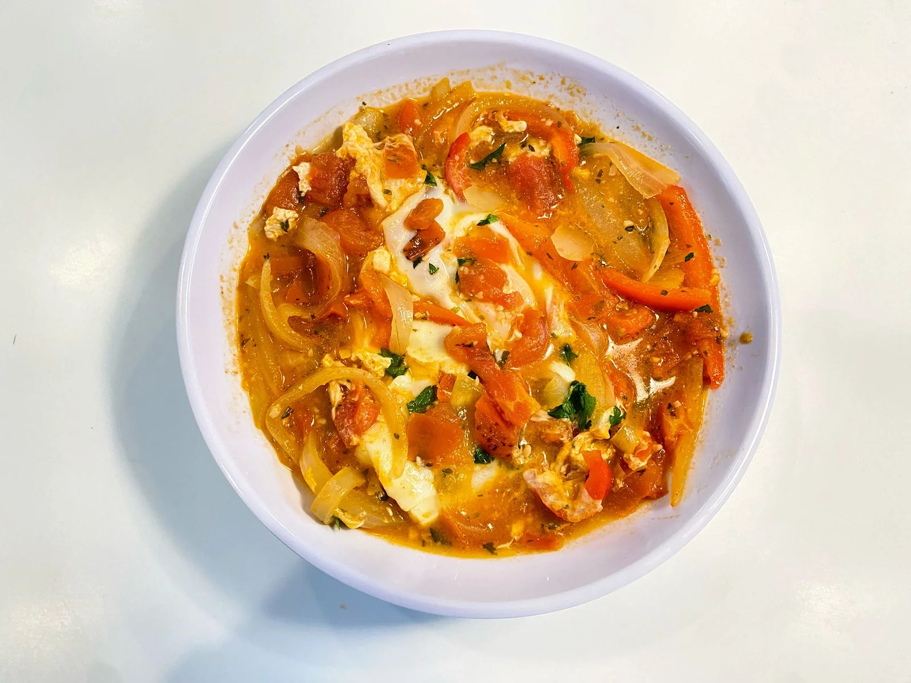

← Recipes · Breakfast
Skillet Eggs
Eggs gently cooked in a rich, homestyle tomato sauce — a breakfast or brunch plate built on one tablespoon.

Eggs gently cooked in a rich, homestyle tomato sauce — a breakfast or brunch plate built on one tablespoon.
Ingredients
The sauce
- 1 tablespoon Chololoy® Original Seasoning
- 1 cup diced large tomato
- 1 cup red bell pepper
- 1 cup white onion
- 1 tablespoon minced garlic
- ¼ cup water
The core
- 2 whole eggs
- 1 teaspoon brown sugar
- A splash of olive oil
- Chopped parsley, to taste
Preparation
- Dice the onion and bell pepper, chop the tomato into small pieces and mince the garlic.
- Heat a splash of olive oil in a skillet and gently fry the onion, pepper, garlic and tomato.
- Stir in a generous tablespoon of Chololoy® Original Seasoning and the brown sugar. Simmer on low heat for 15 minutes.
- Add the water so the sauce doesn’t stick. Once it bubbles, crack the eggs on top (don’t stir) and cook to your liking.
- Take it off the heat, sprinkle parsley over the yolks and bring the skillet straight to the table.
Serve with toasted crusty bread for dipping into the sauce.
• Chololoy® is made only with natural ingredients and no preservatives.